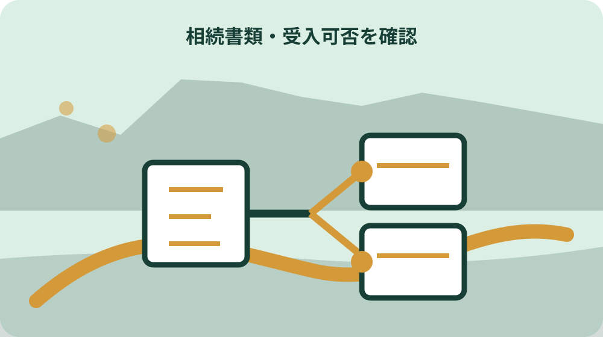
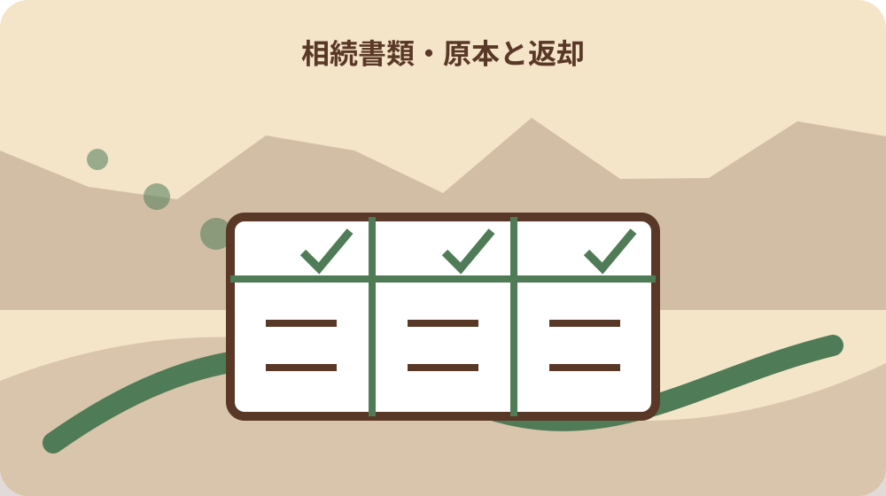

先に結論を確認する
この記事の答え：一律には言えません。手続ごとに受入可否、認証文付き写しの要否、追加の戸籍・住民票・申請書を担当課へ確認し、確認日と回答範囲を残します。
森町で最初に照合する条件：戸除籍謄本の原本束、登記官の認証文付き一覧図の写し、自作の相続関係メモを別フォルダーにする。
相続書類地図の完成物を提出先別の表にする
相続で戸籍を集め始めると、同じ名前が載る書類が増えます。最初に作るのは相続人を決める一枚ではなく、法務局、森町住民生活課、税務課、農林担当、金融機関など提出先ごとに、手続名、必要書類、原本か写しか、提出日、返却予定を並べた書類地図です。
表の一行を一手続にします。相続登記、固定資産税の相続人代表者指定、森林土地所有者届、預貯金の解約を一つの相続欄へまとめると、どこまで終わったか追えません。同じ一覧図を使う場合も、受け取った窓口と返却の有無を別行にします。
書類地図には被相続人の氏名、死亡日、最後の住所、本籍、案件番号を置きます。ただし家族共有版へ戸籍の全情報を複写せず、原本保管者と封筒番号を記します。必要な人だけが原資料へアクセスできる形にします。
完成条件は、兄弟姉妹が表を見て、次にどの窓口へ何を持つか分かることです。相続人の法的範囲や書類の受理を家族だけで断定せず、確認先と未確認事項も成果として残します。
期限欄には法定期限だけでなく、家族内の資料回収日、窓口への確認日、郵送予定日を置きます。担当者が動けない場合の引継ぎ先も決め、期限直前に原本の所在を探す状態を避けます。
戸籍束・認証一覧図・自作メモを見分ける
最初のフォルダーを三つに分けます。一つ目は戸籍、除籍、改製原戸籍の原本束、二つ目は登記官の認証文が付いた法定相続情報一覧図の写し、三つ目は家族が作った連絡先や相続関係のメモです。見た目が似ていても効力と利用先は異なります。
法務局は、戸除籍謄本等と相続関係を表す一覧図を登記所へ提出し、登記官が民法上の相続関係と合致することを確認した後、認証文付きの写しを無料で交付する制度と説明しています。認証文のない自作図を同じ名称で保存しません。
戸籍束には取得自治体、証明書名、対象者、取得日、通数を付けます。出生から死亡までを集めたつもりでも途中の転籍や改製を見落とすことがあるため、連続性を自己判断で確定せず、利用先や専門家へ確認した日を残します。
自作メモは連絡や作業分担に便利ですが、提出用証明書ではありません。表題に家族用と明記し、住所や連絡先の更新日を付けます。認証一覧図のコピーを作る場合も、提出先が複写を認めるかを先に確認します。
認証一覧図を受け取ったら、認証文、作成日、被相続人、申出人、通数を受領記録へ写します。書類の内容を家族メモへ転記する場合は、転記日と原本照合者を残し、転記表を証明書そのものと表示しません。
森町で戸籍を集める方法と制限を確認する
森町の戸籍申請ページは、戸籍に載る本人等だけでなく、相続に伴う権利行使や国・地方公共団体への提出など正当な理由による請求区分を示しています。請求者と必要な戸籍の関係、利用目的、提出先を整理してから申請します。
同ページには、亡くなった兄弟姉妹の相続人が遺産分割協議のため相続人を特定する記入例があります。家族関係が複雑な場合は例文だけを写さず、自分の権利や必要理由を申請書上で具体的に説明します。
森町は戸籍謄本・抄本を一通450円、除籍または改製原戸籍を一通750円と案内しています。費用表には証明書名、通数、請求日、受領日を置き、法定相続情報一覧図の交付が無料であることと戸籍取得費用を混同しません。
広域交付では本籍地が遠い戸籍を最寄りの市区町村窓口でまとめて請求できる場合がありますが、代理、郵便、第三者請求はできないと森町は案内しています。対象証明書と請求者の制限を確認し、使えない戸籍は本籍地請求など別経路へ分けます。
請求前には既に家族が取得した戸籍の本籍、筆頭者、対象期間を確認します。同じ証明書を重ねて取る必要がある場合も、提出先と返却条件を理由欄へ書き、単なる重複か必要通数かを区別します。
法定相続情報一覧図の申出経路を記録する
法定相続情報証明制度は2017年5月に始まった制度です。申出では戸除籍謄本等を用意し、法定相続情報一覧図を作成して登記所へ提出します。申出書、添付書類、提出日、返却された戸籍束、交付された写しの通数を一案件として記録します。
申出先は、被相続人の本籍地、最後の住所地、申出人の住所地、被相続人名義の不動産所在地を管轄する登記所から選べると法務局は案内しています。家族の移動負担だけで決めず、郵送の条件や後の再交付先も確認します。
一覧図の写しを何通求めるかは、利用予定の手続一覧から考えます。複数窓口へ同時に出すのか、返却を受けて順番に使うのかを決め、見込みだけで過剰な個人情報書類を配りません。
申出を専門家へ依頼する場合は、誰が申出人として記載されるか、原戸籍の返却先、認証写しの受領者、費用を確認します。家族の一人が書類を持ったままにならないよう、受領日に共有表を更新します。
郵送で申出る場合は発送物と返信物を分けて一覧にします。追跡番号、発送日、到着確認日、返信用封筒、返却された戸籍の通数を記録し、配送中の状態を提出済みや返却済みにしません。
一覧図が示す法定相続人の範囲を読み違えない
法務局は、法定相続情報一覧図が戸除籍謄本等の記載に基づく法定相続人を明らかにするものと説明しています。遺産を誰が取得したか、相続税の額、登記の完了まで証明する一枚ではありません。
相続放棄や遺産分割協議の結果により実際には相続人とならない人も一覧図へ記載される場合があると法務局は注意しています。家族用一覧では、法定相続人欄と、協議や手続の結果欄を分けます。
一覧図に住所が記載されていても、各窓口で住民票や印鑑証明が不要になるとは一律に判断しません。手続名、提出日、窓口の現行案内に基づき、追加書類を確認します。
被相続人ごとに案件番号を分けます。夫婦や親子が近い時期に亡くなった場合、似た相続人構成でも一覧図は別案件です。戸籍束や認証写しが混在しないよう、表紙に被相続人と申出番号を表示します。
一覧図の氏名や続柄に疑問がある場合は、家族が修正線を引いた書類を提出しません。根拠にした戸籍と疑問箇所を整理し、申出を扱った登記所や必要な専門家へ確認する案件として分けます。
相続人代表者指定届を相続登記と分ける
森町は固定資産所有者が死亡した場合、相続登記が完了するまでの間、固定資産税関係書類を受け取る相続人代表者を決め、指定届を提出するよう案内しています。この代表者は不動産の登記名義を変更する手続と同じではありません。
書類地図では、相続人代表者指定届の提出先を森町税務課、目的を固定資産税書類の受領として記します。相続登記の申請先、完了日、登記識別情報などは別行にし、町への届出済みを登記完了と表示しません。
森町の様式ページには指定届と記入例があります。保存した様式には取得日を付け、提出前に現行版か確認します。家族内で代表者を変更する場合の扱いも、過去の様式から推測せず税務課へ尋ねます。
一覧図の写しを添付できるか、戸籍や遺産分割協議書等の別資料が必要かは、対象手続と個別事情を示して確認します。法務局で利用できることを理由に、町の受理条件まで同じと決めません。
指定届の控えには受付日と対象年度を記録します。納税通知書の送付先が変わったかを次回発送時に確認し、届出提出だけで全ての固定資産が一覧化されたとも、代表者が所有者になったとも扱いません。
森林土地所有者届を別期限で管理する
相続財産に森林がある場合、森町は相続などで森林土地を取得した人へ、所有者となった日から90日以内の届出を案内しています。固定資産税の相続人代表者指定や相続登記とは目的と期限が異なるため、別行で管理します。
まず対象土地が制度上の届出対象かを確認します。納税通知書に山林と書かれていることだけで判断せず、土地の所在、取得原因、取得日、届出先を町の担当へ示します。
森林土地所有者届へ一覧図を使えるか、登記事項証明や位置図など別添付が必要かは現行案内で確認します。提出書類名、原本か写しか、受付印のある控えを返してもらえるかを記録します。
90日という期限は、他の相続手続が完了するまで待つ意味ではありません。遺産分割が未了の場合の届出者や記載方法を家族だけで決めず、期限前に担当へ相談した日を残します。
複数筆の森林がある場合は土地ごとに所在、面積、名義資料、届出状況を分けます。一部だけ確認できた状態を全件完了にせず、対象外と回答された土地にも確認日と回答部署を残します。
町の各手続が一覧図を受けるか個別に尋ねる
法定相続情報一覧図は相続手続や年金等手続で利用できると法務局が案内していますが、全ての窓口で全添付書類に代わるとは書かれていません。森町へは「相続で使えますか」ではなく、正式な手続名を示して尋ねます。
問い合わせ票には担当課、手続名、被相続人との関係、持っている一覧図が認証文付き写しか、住所記載の有無、確認したい代替書類を記します。回答は受入可否、追加書類、原本返却、期限に分けます。
電話で受入可能と聞いた場合も、回答日と担当部署、適用範囲を残します。別の相続人、別年度、別の財産へ同じ回答を広げず、提出時に現行案内を再確認します。
受け付けられない場合は一覧図が無意味なのではなく、その手続に必要な戸籍範囲や別証明があるということです。理由と必要書類を記録し、次の窓口で同じ思い込みをしないようにします。
窓口ごとの回答表には選択肢を設けます。認証一覧図で可、戸籍束が必要、一覧図に加えて別資料が必要、個別確認中の四つを基本とし、口頭回答の自由記述だけで受理条件が曖昧にならないようにします。

原本提出・写し提出・提示のみを区別する
提出欄には、原本提出、写し提出、原本提示後返却、郵送提出を分けて記します。「戸籍を出した」だけでは、手元に戻るのか、別窓口へ同時に使えるのか判断できません。
封筒ごとに内容物一覧を付けます。戸籍束、認証一覧図、本人確認書類、委任状、各届出書の控えを番号で管理し、郵送前後に枚数を確認します。個人番号や口座情報を不要な手続へ同封しません。
窓口で原本還付や返却の案内を受けた場合は、返却条件と時期を確認します。返却される見込みを前提に次の提出日を詰めすぎず、遅れた場合の代替日も予定表へ入れます。
データ化する際は、認証文やページの一部を欠かさないよう注意します。ただしスキャンデータが原本と同じ扱いになるとは限りません。電子提出の可否と形式は提出先の案内を確認します。
郵送前の点検は二人で行い、原本を入れる必要がある書類と写しで足りる書類を読み合わせます。返送先住所と連絡先も確認し、送った後に不足へ気づいた場合の問い合わせ番号を控えます。

返却・再交付・追加取得の担当を決める
法務局は法定相続情報一覧図を申出日の翌年から起算して5年間保存し、その間は当初の申出人が再交付を受けられると案内しています。申出人でない相続人が同じように再交付できると考えず、担当を表に明記します。
再交付の可能性があるなら、当初の申出登記所、申出日、申出人、交付通数、保管期限の計算根拠を残します。家族が遠方に住む場合は、郵送手続や必要書類を現行案内で確認します。
戸籍を追加取得するときも、誰のどの期間が不足しているかを具体化します。同じ戸籍を兄弟姉妹が重複請求しないよう請求担当を一人にし、費用と受領日を共有します。
返却された原本は、提出前の保管場所へ戻した日まで記録します。机上に置いた状態を返却済みとせず、封筒番号と通数を照合して案件表を閉じます。
大石の視点：便利な一枚を万能書類にしない
ここまでの戸籍請求、広域交付、相続人代表者指定、森林届、法定相続情報制度は一次資料で確認できる事項です。ここからは私、大石博之が家族間で書類を引き継ぐ際の考えで、森町や法務局の公式見解ではありません。
私なら、一覧図があることを「相続の証明は全部終わった」と伝えません。何の窓口で受け取られ、何の追加書類が必要だったかを一行ずつ残します。便利な書類ほど利用範囲を大きく解釈しやすいからです。
兄弟姉妹の一人が原本を集める場合、書類を独占しているように見えない工夫も必要です。取得費、保管場所、提出予定、返却日を共有し、戸籍画像を家族のメッセージへ無制限に流さない方法を決めます。
相続書類地図は遺産分割の結論を決める表ではありません。手続の進み具合と根拠書類を見えるようにし、法的判断や税務判断が必要な箇所を専門家へ正しく渡すための索引として使います。
兄弟姉妹へ渡せる相続書類地図を完成させる
完成表には提出先、担当課、手続名、期限、根拠URL、必要書類、一覧図の受入確認日、原本・写しの別、提出日、受付控え、返却予定、次回行動、担当者を並べます。被相続人ごとに一冊へまとめます。
表の末尾には未確認事項だけを集めます。例えば税務課へ一覧図の受入可否を確認、森林の対象区域を確認、戸籍の連続性を専門家へ確認というように、質問と持参資料を一文にします。
共有時には最新版の版番号と更新日を伝えます。古い表を削除せず、どの提出を終えた時点の版かを記録します。家族の担当交代があっても、原本の所在と次の期限を見失わない状態にします。
最後に各窓口の回答が個別案件のものだと確認し、別の相続へ無条件に転用しません。戸籍束、認証一覧図、町の固有様式を分け、必要な人が必要な根拠へ戻れることを相続書類地図の完成とします。
完了した手続には、単なる済印ではなく受付日、受付先、返却物、残る確認を記します。税通知の到着や登記完了など後日に確認する結果がある場合は、提出済みと結果確認済みを別の状態にします。
原本保管者が変わるときは、封筒番号と通数を二人で読み合わせ、受渡日を署名します。相続書類には長く保管するものがあるため、短期の提出作業が終わった後も保管期限と廃棄判断を別に管理します。
家族会議では書類の不足と遺産分割の意見を同じ議題へ混ぜません。まず提出に必要な事実確認と担当を決め、権利や分配の判断は適切な専門家への相談を含む別の記録で扱います。会議後は決まった担当と期限を本人へ確認し、推測で担当者名を入れません。